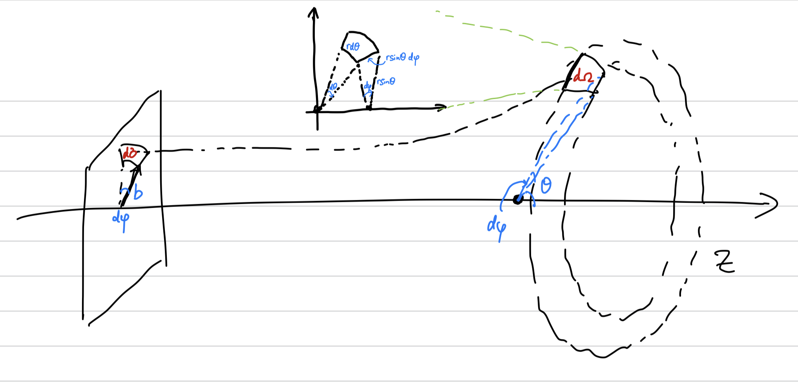

2023-12-13
These notes are for the fall 2023 iteration of Harvard’s second-semester undergraduate quantum mechanics, Physics 143b, taught by Sonia Paban. The course includes a brief introduction to path integrals, followed by perturbation theory applied to hydrogen energy levels, then quantum dynamics, WKB approximation, scattering, and density operators.
These notes deviate from the course material by
a section on symmetry and conservation laws, adapted from Griffiths.
an interaction-picture explanation of time-dependent perturbation theory, adapted from MIT’s online lecture notes.
the adiabatic theorem from Weinberg’s Lectures on Quantum Mechanics.
does not include density operators.
A note on notations: d/dx, ∂/∂x are abbreviated dx, ∂x. Summation over a free index which does not appear on the left hand side are occasionally omitted to reduce clutter. Function arguments are occasionally integerchanged with subscripts to reduce clutter.
A single-variable Gaussian integral may be evaluated by a change into spherical coordinates: $$G(a)=\int_{-\infty}^\infty dx\, \exp(-ax^2)=\sqrt{\dfrac\pi a}$$
More generally, we may consider a general Gaussian integral for a positive definite n × n matrix A and offset ω. $$\label{eqn:real_multivariable_gaussian} \int_{-\infty}^\infty(dx_1\cdots dx_n)\, \exp\left(-x^TAx + \omega^Tx\right)= \exp\left(\dfrac 1 4 \omega^TA^{-1}\omega\right)\sqrt{\dfrac{\pi^N}{\det A}}$$ The integral is evaluated by diagonalizing A and completing the square, as below: $$x^TAx - \omega^Tx = \left(x - \dfrac{A^{-1}\omega}2\right)^TA\left(x-\dfrac{A^{-1}\omega}2\right) - \dfrac 1 4 \omega^TA^{-1}\omega$$
We may also consider integrating imaginary, oscillating exponentials:
Put in by hand a convergence factor exp (−δx2), then take δ → 0
Perform the change of variables $x'=\sqrt{-i\alpha} x$
The following integrals from Wikipedia are helpful: $$\label{eqn:complex_multivariable_gaussian} \begin{aligned} \int_{-\infty}^\infty d^nx\, \exp\left(-\dfrac 1 2x^T A x + \omega^Tx \right) &= \sqrt{\dfrac{(2\pi)^n}{\det A}}\exp \left(\dfrac 1 2 \omega^T A^{-1} \omega\right) \\ \int_{-\infty}^\infty d^nx\, \exp\left(-\dfrac 1 2x^T A x + i\omega^Tx \right) &= \sqrt{\dfrac{(2\pi)^n}{\det A}}\exp \left(-\dfrac 1 2 \omega^T A^{-1} \omega\right) \\ \int_{-\infty}^\infty d^nx\, \exp\left(-\dfrac i 2x^T A x + i\omega^Tx \right) &= \sqrt{\dfrac{(2\pi i)^n}{\det A}}\exp \left(-\dfrac i 2 \omega^T A^{-1} \omega\right) \end{aligned}$$
Recall that in Lagrangian mechanics, the Lagrangian ℒ(q,q̇,t) is usually associated with T − V. Based on the Lagrangian, one may define the action functional as below, where t1, t2 may be omitted if clear from context. St1, t2[q] = ∫tatbℒ(q(t),q̇(t),t)
Example 1 (Classical free particle). Recall a free point particle with ℒ = mẋ2/2 The Lagrangian e.o.m and the resulting classical path are $$m\ddot x = 0\implies x_{\mathrm{cl}}(t)=\dfrac{x_b-x_a}{t_b-t_a}(x-t_a)+x_a$$ The corresponding classical action is $$S[x_{\mathrm{cl}}] = \int_{t_a}^{t_b} dt\, \dfrac 1 2 m \left(\dfrac{x_b-x_a}{t_b-t_a}\right)^2 = \dfrac{m(x_b-x_a)^2}{2(t_b-t_a)}$$
The theorem below shows how the path integral formulation quantum mechanics is based classical Lagrangian mechanics. The following theorem demonstrates its relation to the Hamiltonian formulation of quantum mechanics.
Definition 1 (propagator). Given the Lagrangian for a system, its propagator, or kernel, is the following integral over all paths q such that q(ta) = xa, q(tb) = xb $$\label{eqn:def_propagator} K(x_b, t_b, x_a, t_a)=\int D[q]\, \exp\left(\dfrac i \hbar S[q]\right) =\int D[q]\, \exp\left(\dfrac i \hbar \int_{t_a}^{t_b}dt\, \mathcal L(q(t), \dot q(t), t)\right)$$
Theorem 1 (path integral formulation). The kernel satisfies K(xb,tb,xa,ta) = ⟨xb,tb|xa,ta⟩ In other words, the Hamiltonian and Lagrangian formulation of quantum mechanics are compatible in the following way (assuming a time-indepent Hamiltonian) $$\label{eqn:propagator_hamiltonian} \int D[q]\, \exp\left(\dfrac i \hbar \int_{t_a}^{t_b}dt\, \mathcal L(q(t), \dot q(t), t)\right) = \left\langle x_b\left|\exp\left(-\dfrac i \hbar(t_b-t_a)H\right)\right|x_a \right\rangle$$
Remark 1. Several remarks are in order:
Every path q contributes a factor with absolute value 1: contributions only differ in phase. Conceptually, the first-order endpoint-preserving variations vanish at the classical path (which satifies the Lagrangian equations of motion), resulting in in-phase contributions, while those paths far from the classical one are easily out of phase.
The destructive interference far away from the classical path relies on the large value of ΔS/ℏ. This qualifies how quantum mechanics degenerates to classical mechanics in the limit ℏ → 0, or when action scales are large when compared to ℏ, as in the case for most macroscopic systems.
Should we choose to describe our system as an evolving field Ψ(x,t) instead of a path q(t), the path-integral formulation generalizes in a straightforward way: $$\int D[\Psi]\exp\left(\dfrac i \hbar\int d^4x\, \mathcal L(\Psi, \dot \Psi, t)\right)$$
We’re assuming spinless particles. There are subtle ties to commutativity here.
The position basis in K(b,a) = ⟨xb|U(tb−ta)|xa⟩ is special. We cannot use the Lagrangian should we choose a different basis for the propagator.
The propagator K determines the dynamics. We take the basis |x, t⟩ and view the system state as defined on the whole space-time, with time evolution via varying t: $$\begin{aligned}\label{eqn:propagator_evolution} \psi(x, t) &= \left\langle\psi|x, t \right\rangle = \langle\psi|{\sum}_{x'}\langle x, t|x', t_0\rangle|x', t_0\rangle\\ &= {\sum}_{x'}K(x, t, x', t_0)\langle\psi|x', t_0\rangle\\ &= {\sum}_{x'}K(x, t, x', t_0)\psi(x', t_0) \end{aligned}$$ Alternatively, assuming a time-invariant Hamiltonian and an energy basis {|n, t⟩} $$\begin{aligned}\label{eqn:propagator_energy_eigenstates} K(x, t, x', t') &= \langle x, t|x', t'\rangle\\ &= {\sum}_n \langle x, t'|n\rangle\langle n|x, t\rangle\\ &= {\sum}_n \exp\left(-\dfrac i \hbar E_n(t-t')\right)\psi_n^*(x)\psi_n(x') \end{aligned}$$ The propagator satisfies the Schrodinger equation: fixing x′, t′ (recall equation [eqn:propagator_hamiltonian]) iℏ∂tK(x,t,x′,t′) = HtK(x,t,x′,t′)
Remark 2. The dynamics of the system is captured by a one-parameter family of unitaries Ut, obtained by integrating the exponential of the Hamiltonian (or computing the Schrodinger equation), which send initial states |ψ0⟩ to |ψt⟩. The propagator is simply the representation of this unitary in the position basis. To see why, recall the action of a linear operator A with matrix representation (Aij) in a finite-dimensional Hilbert space (Av)i = ∑jAijvj The matrix element representation Aij may be viewed instead as a map A(i,j) = Aij and the states similar maps v(j) = vj. (Av)(i) = ∑jA(i,j)v(j) The direct analogue of this in infinite-dimensional Hilbert space is to replace summing over the discrete index j with integration over a continuous variable x ψt(x) = (Ut ψ0)(x) = ∫K0 → t(x,x′)ψ0(x′) dx′
Consider the following method of parameterizing all possible paths (xa,ta) → (xb,tb). Discretize time by units of ϵ: let t0 = ta, tN = tb, Nϵ = tb − ta, and tj + 1 = tj + ϵ. $$K(b, a)\sim \lim_{\epsilon \to 0, N\epsilon = \Delta t}\int\cdots \int (dx_1\cdots dx_{N-1}) \exp\left(\dfrac i \hbar S[q(x_1\cdots x_{N-1})]\right)$$ Note that x0, xN are fixed, so they are not variables to be integrated. Under this parameterization, the values {x1⋯xN − 1} parameterizes a path q under the following substitution: $$\begin{aligned} S[q]&=\int_{t_a}^{t_b}\mathcal L(q, \dot q, t)\, dt = \sum_{j=0}^{N-1}\mathcal L\left(x_i, \dfrac{x_{i+1}-x_i}{\epsilon}, t\right) \end{aligned}$$
Let qcl denote the classical path satisfying Euler-Lagrange equations. Consider the following quantity for an endpoint-preserving perturbation η and time-invariant Lagrangian: $$\begin{aligned} \mathcal L(q_{\mathrm{cl}}+\epsilon \eta, \dot q_{\mathrm{cl}}+\epsilon \dot \eta) &= \sum_{n=1}^\infty \dfrac 1 {n!} \left[\epsilon \left(\eta \partial_{q} + \dot \eta \partial_{\dot q}\right)\right]^n \mathcal L(q_{\mathrm{cl}}, \dot q_{\mathrm{cl}}, t) \\ &= \left[1 + \epsilon (\eta \partial_{q} + \dot \eta \partial_{\dot q}) + \epsilon^2\left(\eta^2 \partial_{q}^2 + 2(\eta \partial_{q})(\dot \eta d_{\dot q}) + \dot \eta^2 \partial_{\dot q}^2\right) +O(\epsilon^3)\right]\mathcal L_{\mathrm{cl}} \end{aligned}$$ The zeroth-order term denotes the classical action, the first-order term vanishes by the Euler-Lagrange equations, and the second-order terms preserve the quadratic coefficients.
Theorem 2 (quadratic Lagrangians are separable). For quadratic Lagrangians of the form ℒ(q,q̇,t) = Aq2 + Bq̇2 Both the Lagrangian and the action separate linearly by classical paths $$\begin{aligned} \mathcal L(q_{\mathrm{cl}} + \eta, \dot q_{\mathrm{cl}} + \dot \eta) &= \mathcal L(q_{\mathrm{cl}}, \dot q_{\mathrm{cl}}) + \mathcal L(\eta, \dot \eta) \\ S[q_{\mathrm{cl}}+\eta] &= S[q_{\mathrm{cl}}] + S[\eta] \end{aligned}$$
Theorem 3 (propagator for separable Lagrangian). When the Lagrangian separates, the propagator in equation [eqn:def_propagator] takes the following form. The path integral over η is agnostic towards xa, xb and only depends on tb − ta since the Lagrangian is time-invariant. $$\begin{aligned}\label{eqn:separable_propagator} K(x_b, t_b, x_a, t_a)&=\int D[q]\, \exp\left(\dfrac i \hbar S[q]\right) =\int D[\eta]\, \exp\left(\dfrac i \hbar S[q_{\mathrm{cl}}+\eta]\right) \\ &= \exp\left(\dfrac i \hbar S_{\mathrm{cl}}\right) \int D[\eta]\, \exp\left(\dfrac i \hbar S[\eta]\right) =A(t_b-t_a)\exp\left(\dfrac i \hbar S_{\mathrm{cl}}\right) \end{aligned}$$
Example 2 (free particle). Recall a free particle has Lagrangian $\mathcal L(x, \dot x)=\dfrac 1 2 m \dot x$. $$K(x, t, x', t') = \sqrt{\dfrac m {2\pi i \hbar \Delta t}}\exp\left(\dfrac{im(x-x')^2}{2\hbar\Delta t}\right)$$ Note the appearance of classical action in the spatially dependent exponential term.
Example 3 (simple harmonic oscillator). Consider the following Lagrangian $$L=\dfrac {m \dot x^2}{2} - \dfrac{m \omega^2}{2}x^2$$ The corresponding classical action is $$S_{\mathrm{cl}}=\frac{m \omega}{2 \sin(\omega \Delta t)} \left(\left(x_a^2+x_b^2\right) \cos (\omega \Delta t)-2 x_a x_b\right)$$ Recalling the simple Harmonic oscillator solution are all real and of the following form $$\psi_n(x)=\dfrac 1 {\sqrt{2^nn!}}\left(\dfrac{m\omega}{\pi \hbar}\right)^{1/4}\exp\left(-\dfrac{m\omega x^2}{2\hbar}\right) H_n \left(\sqrt{\dfrac{m\omega}{\hbar}x}\right)$$ Perform this substitution and invoke equation [eqn:propagator_energy_eigenstates] $$\sqrt{\dfrac{m\omega}{\hbar}}x_a\mapsto \xi, \sqrt{\dfrac{m\omega}{\hbar}}x_b\mapsto \eta$$ $$K=\sqrt{\dfrac{m\omega}{2\pi \hbar i \sin \omega \Delta t}} \exp \left(\dfrac 1 2 (\xi^2+\eta^2)-\dfrac{\xi^2+\eta^2 - 2\xi\eta \exp(-i\Delta t \omega)}{1-\exp(-2i\Delta t\omega)}\right)$$ The exponential term is the exponential of the classical action. $$K(b, a)=\sqrt{\dfrac{m\omega}{2\pi \hbar i \sin \omega \Delta t}}\exp\left(\dfrac i \hbar S_\mathrm{cl}\right)$$
Suppose we successfully solved for the eigensystem {En0, ψn0} for a time-independent Hamiltonian H0. Perturbation theory approximates the eigensystem for the perturbed Hamiltonian H = H0 + λH′ The key assumption of perturbation theory is that the eigensystem has a power series expansion in terms of λ. We use this assumption and the known solutions for λ = 0 to solve for the perturbed eigensystem at λ = 1. Concretely,
$$\begin{aligned} \psi_n &= \psi_n^0 + \lambda \psi_n^1 + \lambda^2 \psi_n^2 + \cdots \\ E_n &= E_n^0 + \lambda E_n^1 + \lambda^2 E_n^2 + \cdots \\ \end{aligned}$$
The subscript denotes the eigensystem index and superscript correction order. Substitute into the eigenvalue equation for H to yield (H0+λH′)(ψn0+λψn1+⋯) = (En0+λEn1+⋯)(ψn0+λψn1+⋯) By assumption this equation holds independently for every power of λ. In the zeroth order H0ψn0 = En0ψn0 To the first and second orders
$$\begin{aligned}\label{eqn:independent first-second perturbation} H^0\psi_n^1 + H'\psi_n^0 &= E_n^0\psi_n^1 + E_n^1\psi_n^0 \\ H^0\psi_n^2 + H'\psi_n^1 &= E_n^0 \psi_n^2 + E_n^1\psi_n^1 + E_n^2 \psi_n^0 \end{aligned}$$
Remark 3. The power series expansion assumption of perturbation theory is not generally true. The solutions to a physical system is not generally smooth around λ = 0, as positive and negative coupling may lead to qualitatively different behaviors (consider a two-body system with attractive compared to repulsive interaction). This manifests mathematically in the divergence of higher-order terms. It is a miracle that we can use the first few terms in the perturbation series with a good conscience in the first place.
Take the inner product of the first equation in [eqn:independent first-second perturbation] with ψn0 to isolate a component ⟨ψn0|H0|ψn1⟩ + ⟨ψn0|H′|ψn0⟩ = En0⟨ψn0|ψn1⟩+En1⟨ψn0|ψn0⟩ Hamiltonian H0 is Hermitian, so the first terms on both sides of the equation cancel, The first-order energy correction is an matrix element of H′ in the orthonormal basis {|ψn0⟩}. En1 = ⟨ψn0|H′|ψn0⟩ For the first order eigenstate correction, rewrite equation [eqn:independent first-second perturbation] as an equation in ψn1. (H0−En0)ψn1 = − (H′−En1)ψn0 Any solution has freedom under ψn1 ↦ ψn1 + αψn0. Expand ψn1 in the orthonormal basis
$$\begin{aligned}\label{eqn:perturbation expansion} \psi_n^1 = \sum_{m\neq n} c_m^{(n)} \psi_m^0 \end{aligned}$$ Substitute into the equation ∑m ≠ n(Em0−En0)cm(n)ψm0 = − (H′−En1)ψn0 Again, to isolate components take the inner product with ψl0 for l ≠ n (El0−En0)cl(n) = − ⟨ψl0|H′|ψn0⟩ Solve for cl(n) and substitute into [eqn:perturbation expansion] yields the first-order eigenfunction corrections $$|\psi_n^1\rangle= \sum_{m\neq n} \dfrac{\left\langle\psi_m^0|H'|\psi_n^0 \right\rangle}{E_n^0 - E_m^0}|\psi_m^0\rangle$$ For En2, consider the second equation in [eqn:independent first-second perturbation]. Inner product with ψn0 to isolate components ⟨ψn0|H0|ψn2⟩ + ⟨ψn0|H′|ψn1⟩ = En0⟨ψn0|ψn2⟩+En1⟨ψn0|ψn1⟩ + En2⟨ψn0|ψn0⟩ Again, the first term on both sides cancel, so En2 = ⟨ψn0|H′|ψn1⟩ − En1⟨ψn0|ψn1⟩ Recall that we excluded ψn0 in the expansion for ψn1⟩ in [eqn:perturbation expansion] so ⟨ψn0|ψn1⟩ = 0, then putting our results in one place:
$$\begin{aligned}\label{eqn:perturbation results} E_n^1 &= \langle\psi_n^0|H'|\psi_n^0\rangle\\ |\psi_n^1\rangle&= \sum_{m\neq n} \dfrac{\left\langle\psi_m^0|H'|\psi_n^0 \right\rangle}{E_n^0 - E_m^0}|\psi_m^0\rangle\\ E_n^2 &= \sum_{m\neq n} \dfrac{|\langle\psi_m^0|H'|\psi_n^0\rangle|^2}{E_n^0 - E_m^0} \end{aligned}$$
In the case of degeneracy, we need to think more rigorously about our solutions:
The first order equation H0ψn0 = En0ψn0 is under-determined: when the eigenspace En0 is of dimension greater than 1, there are many eigenstates which satisfy the first-order equation. The problem when we consider the first-order eigenstate correction $$|\psi_n^{1}\rangle = \sum_{m \neq n} \frac{\langle \psi_m^0 | H' | \psi_n^0 \rangle} {E_n^0 - E_m^0} | \psi_m^0 \rangle$$ It is not defined in case of degeneracy, when En0 = Em0 for some n ≠ m. The same holds for the second order energy correction.
One way to make sense of the first-order eigenfunction correction equation is choose a “good” basis for the degenerate eigenspace such that ∀n ≠ m, En0 = Em0 ⟹ ⟨ψm0|H′|ψn0⟩ = 0 This allows us to cancel the zero denominators in [eqn:perturbation results] with a zero enumerator and hope that no higher-order degeneracy exists so the indeterminate form is 0. We need the following definition to make precise what we mean by finding a “good” eigenbasis for H0 with respect to a perturbation H′.
Definition 2 (subspace projection of an operator). the projection of an operator H : V → V onto a subspace W ⊂ V H|W : W → W is $$H_{|W} : W \xrightarrow \iota V \xrightarrow{H} V \xrightarrow{P_{V \to W}} W$$ Given an orthonormal basis {|i⟩} for W, the matrix representation of H|W is Wij = ⟨i|H|j⟩.
Example 4 (operator in ℂ3). The subspace projection of the operator $$A = \begin{pmatrix} a_{11} & a_{12} & a_{13} \\ a_{21} & a_{22} & a_{23} \\ a_{31} & a_{32} & a_{33} \end{pmatrix}$$ onto the subspace spanned by the first and third basis elements is $$A_{|\mathrm{span}(e_1, e_3)} = \begin{pmatrix} a_{11} & a_{13} \\ a_{31} & a_{33} \end{pmatrix}$$ Formally, this is done by removing the second row and column.
Definition 3 (good basis for perturbation). ℬ = {|i⟩} is “good” basis for perturbing H0 with respect to H′ if, for every eigenspace W ⊂ V of H with basis 𝒜 ⊆ ℬ, the representation of H′|W under 𝒜 is diagonal. In other words ∀|m⟩,|n⟩ ∈ 𝒜, m ≠ n : H′mn = 0
Remark 4. Finding a good basis is weaker than finding a simultaneous eigenbasis for H0, H′, which does not exist when [H0,H′] ≠ 0. A good basis always exists by applying the spectral theorem to the projection of H′ on each eigenspace of H0.
The following results helps us find a good basis easily under certain conditions.
Theorem 4 (characterization of commutativity). Two normal operators A, B commute if and only if they leave the eigenspaces of each other invariant.
Proof: Assume commutativity, and let x be an eigenvector of A with eigenvalue λ, then BAx = λBx = A(Bx), so Bx is also an eigenvector of A with eigenvalue λ. Conversely, let xi be an eigenbasis for A such that Axi = λixi, ABxi = λiBxi. Given an arbitrary vector v = cixi, we have BAv = ciBAxi = ciλiBxi = ciABxi = ABv
This applies in particular two Hermitian operators. In a subspace spanned by eigenvectors of A with distinct eigenvalues, commutativity forces H to be diagonal.
Lemma 5. Given commuting Hermitian operators H, A, H|W is diagonal for every subspace W spanned by an orthonormal set of eigenvectors of A with distinct eigenvalues.
Proof: By AH = HA, ⟨i|H|j⟩ = λj−1⟨i|AH|j⟩ = λi−1⟨i|HA|j⟩. Since λi ≠ λj, ⟨i|H|j⟩ = 0.
Note commutativity is not transitive: [A,H0] = [A,H′] = 0 does not imply [H0,H′] = 0. The following theorem is the main result of this section.
Theorem 6 (convenient good basis condition). Given Hermitian H0, H′. An eigenbasis {|i⟩} for H0 is a good basis if there exists an operator A such that [A,H0] = [A,H′] = 0 and each subset of {|i⟩} corresponding to a degenerate subspace of H0 are eigenvectors of A with distinct eigenvalues.
Proof: Given such an A and mutual eigenbasis {|i⟩} between A, H0, consider each degenerate eigenspace W of H0. By the lemma above, H′|W must be diagonal in this basis.
Remark 5. The converse to the theorem is not true. Given a good basis and [A,H0] = 0, the fact that H′|W is diagonal for each degenerate eigenspace does not mean that it has to leave it invariant. Consider a good basis bi which is a shared eigenbasis for H0, A with eigenvalues λi, ρi for the two operators respectively. Assume λ1 = λ2, then ρ1 ≠ ρ2. It suffices to find a H′ whose projection onto the span of b1, b2 is diagonal but changes some eigenspace of A. The span of b1, b2 belongs to distinct eigenspaces of A by ρ1 ≠ ρ2, the following H′ suffices for nonzero H′13, H′23. All representations are in the good basis. $$H = \begin{pmatrix} \lambda_1 \\ & \lambda_2=\lambda_1 \\ &&\lambda_3 \end{pmatrix}, \quad A = \begin{pmatrix} \rho_1 \\ & \rho_2\neq \rho_1 \\ &&\rho_3 \end{pmatrix}, \quad H' = \begin{pmatrix} H'_{11} && H'_{13} \\ & H'_{22} & H'_{23} \\ &&H'_{33} \end{pmatrix}$$
Remark 6. The operator A is usually of two forms:
a unitary symmetry exhibited by both H0, H′. The condition in the theorem above boils down to degenerate eigenstates of H0 having different behaviors under the application of the symmetry. See the example below.
a Hermitian observable whose eigenstates coincide with energy eigenstates of H0, H′. The theorem condition translates to degenerate eigenstates of H0 having different observable values. For example, H, Lz, L2
Example 5 (oscillator). Consider a particle in two-dimensional oscillator potential $$H = \frac{p^2}{2m} + \frac{1}{2} m\omega^2 (x^2 + y^2), \quad H' = \epsilon m \omega^2 x y$$ The first excited state is two-fold degenerate with one basis $$\begin{aligned} \psi_0^{a} &= \psi_0 \phi_1 = \alpha y \exp\left(-\frac{\beta^2 (x^2 + y^2)}{2}\right) \\ \psi_0^{b} &= \psi_1 \phi_0 = \alpha x \exp\left(-\frac{\beta^2 (x^2 + y^2)}{2}\right) \end{aligned}$$ One can show that H′ab ≠ 0, so this is not a good basis. H has continuous rotational symmetry and reflections, while H′ is invariant under A : (x,y) ↦ (−x,−y) and A′ : (x,y) ↦ (y,x). Both A, A′ both commute with H, H′.
ψ0a, ψ0b are degenerate eigenvectors of A, so A does not give us a good basis.
ψ0a, ψ0b are not eigenvectors of A′, but $\frac{1}{\sqrt{2}} (\psi_0^{a} \pm \psi_0^{b})$ are with eigenvalues ± 1. They constitute the desired basis in which H′ is diagonal.
The lowest-order correction Hamiltonian due to relativistic correction to kinetic energy is $$\label{eqn:relativistic_hamiltonian} H'_r = -\dfrac{p^4}{8m^3c^2}$$ Exploiting the Hermiticity of p, the first-order correction is $$E_r^1=-\dfrac{1}{8m^3c^2}\left\langle p^2\psi|p^2\psi \right\rangle$$ For our unperturbed |ψ⟩, which are solved for non-relativistically, p2 = 2m(E−V), so $$\begin{aligned}\label{eqn:rel_corr} E^1_r &= -\dfrac 1{2mc^2}\left\langle(E-V)^2 \right\rangle \\ &= -\dfrac 1{2mc^2}\left(E_n^2 - 2E_n \left\langle V \right\rangle + \left\langle V^2 \right\rangle\right) \\ &=-\dfrac{(E_n)^2}{2mc^2}\left[\dfrac{4n}{l+1/2}-3\right] \end{aligned}$$ Several quantities which are handy in such evaluations when we use the basis n, l, ml $$\left\langle\dfrac 1 r \right\rangle = \dfrac 1 {n^2 a} \quad \left\langle\dfrac 1 {r^2} \right\rangle = \dfrac 1 {(l+1/2)n^3a^2}\quad \left\langle\dfrac 1 {r^3} \right\rangle = \dfrac 1 {l(l+1/2)(l+1)n^3a^3}$$
The perturbation is spherically symmetric, so L2, Lz commute with both H, H′r and |n, l, m⟩ are distinct eigenstates of (L2,Lz), taken together, allowing us to use nondegenerate perturbation theory. Relativistic correction to the kinetic energy lifts the l-degeneracy. Our complete set of commuting observables (recall [def:csco]) are H, L2, Lz, S2, Sz.
From the electron’s frame, the proton’s motion generates a magnetic field which couples to the electron spin. $$\label{eqn:spin_orbit_coupling} H'_{\mathrm{so}} = \left(\dfrac{e^2}{8\pi \epsilon_0}\right)\dfrac 1 {m^2c^2r^3}\bf{S\cdot L}$$ The energy spectrum is degenerate in m, ms yet [S⋅L,Lz], [S ⋅ L,Sz] ≠ 0. Therefore we cannot use m, s as our quantum numbers. Consider instead the total angular momentum $$\label{def:J} \bf{J\equiv L + S}$$ We propose an addition of angular momentum transformation, which replaces the complete set of commuting observables for a Hamiltonian from L2, Lz, S2, Sz with J2, L2, S2, Jz corresponding to quantum numbers j, l, s, mj. We first need to verify commutativity with H′so.
Proposition 7. [J,S ⋅ L] = 0
Proof: Without loss of generality consider Jz, $$\begin{aligned} [J_z, \mathbf{S\cdot L}] &= [S_z+L_z, S_xL_x+S_yL_y+S_zL_z] \\ &= [S_z, S_x]L_x + [S_z, S_y]L_y + [L_z, L_x]S_x + [L_z, L_y]S_y \\ &= S_yL_x - S_xL_y + L_yS_x - L_xS_y = 0 \end{aligned}$$
Also note that $\mathbf{S\cdot L} = \dfrac 1 2 (J^2 - L^2 - S^2)$, so H′so commutes with L2, S2, J2, Jz.
Proposition 8. H′so commutes with J2, L2, S2, Jz.
Proof: The previous proposition shows that H′so commutes with Jz. To show commutativity with the other observables, note that $$\mathbf{S\cdot L} = \dfrac 1 2 (J^2 - L^2 - S^2)$$ The three operators L2, S2, J2 pairwise commute.
The eigenvalues of L ⋅ S are then $$\dfrac{\hbar^2}2\left[j(j+1)-l(l+1)-s(s+1)\right]$$ Substituting total spin s = 1/2
$$E^1_{\mathrm{so}}=\dfrac{(E_n)^2}{mc^2}\cdot \dfrac{n\left[j(j+1)-l(l+1)-3/4\right]}{l(l+1/2)(l+1)}$$ Luckily, this combines neatly with the contribution from the relativistic correction to give the fine structure correction $$E^1_{\mathrm{fs}}=\dfrac{(E_n)^2}{2mc^2}\left(3-\dfrac{4n}{j+1/2}\right)$$
| n | j | l | mj | degeneracy |
|---|---|---|---|---|
| 1 | 1/2 | {0} | { ± 1/2} | 2 |
| 2 | 1/2 | {0, 1} | { ± 1/2} | 4 |
| 3/2 | {1} | { ± 1/2, ± 3/2} | 4 | |
| 3 | 1/2 | {0} | { ± 1/2} | 2 |
| 3/2 | {1, 2} | { ± 1/2, ± 3/2} | 8 | |
| 5/2 | {2} | { ± 1/2, ± 3/2, ± 5/2} | 6 |
Combined with the Bohr formula, the energy now depend on both n, j.
$$\label{eqn:fs_energy_level} E_{nj} = -\dfrac{(E_0)^2}{n^2}\left[1 + \dfrac{\alpha^2}{n^2}\left(\dfrac{n}{j+1/2} - \dfrac 3 4\right)\right]$$
Our complete set of commuting observables are H, L2, S2, J2, Jz corresponding to quantum numbers n, l, s, j, mj. Given n, we still have considerable degeneracy in j, l, mj (table 1).
Zeeman effect characterizes the energy corrections of an atom under external magnetic field.
Definition 4 (gyromagnetic ratio). The gyromagnetic ratio γ of a system is the ratio between its magnetic moment and angular momentum. μ = γL For a classically rotating body, $\gamma = \dfrac q{2m}$.
Definition 5 (Bohr magneton). The Bohr magneton provides the natural unit for gyromagnetic ratio of atomic systems. $$\mu_B \equiv \dfrac{e\hbar}{2m_e}$$
For an electron, the gyromagnetic ratio for orbital motion and spin are different: that for the spin is roughly twice its classical value. Note that μ scales inversely with mass. $$\bm \mu = \bm \mu_l + \bm \mu_s = \dfrac{\mu_B}{\hbar}\left(\mathbf{L} + 2\mathbf{S}\right)$$ In an external magnetic field B, a hydrogenic atom has the following correction $$H'_Z = -\bm \mu \cdot \mathbf{B}=\dfrac{\mu_B} {\hbar}\left(\mathbf{L} + 2\mathbf{S}\right)\cdot \mathbf{B}$$
When B ≪ Bint, we let H0 = HBohr + H′fs. The zeroth-order eigenstates are given by by L2, S2, J2, Jz. Without loss of generality, let $\mathbf{B} = B\hat {\mathbf{z}}$, then (Z is for Zeeman) $$\label{eqn:zeeman_hamiltonian} H'_Z = \dfrac{\mu_B B}{\hbar}\left(L_z + 2S_z\right)$$ After we have thus aligned the external field in the z-direction, the correction H′Z commutes with our complete set of operators and is diagonal in the l, s, j, mj basis, in which case $$\begin{aligned} E^1_Z &= \dfrac{\mu_B B}{\hbar}\langle L_z + 2S_z\rangle\\ &= \dfrac{\mu_B B}{\hbar}\left(J_z + \langle S_z\right)\rangle \end{aligned}$$ We now consider ⟨Sz⟩: the total angular momentum J = L + S is constant, so the time average of S is its projection along J (see Griffiths for detailed explanation) $$\begin{aligned} \langle S_z\rangle&= \dfrac{\langle\mathbf{S\cdot J}\rangle}{J^2}J_z \\ &= \langle\dfrac 1 2\left(J^2 + S^2 - L^2\right)\rangle\dfrac{\hbar m_j}{j(j+1)} \\ &= \dfrac{j(j+1)+s(s+1)-l(l+1)}{2j(j+1)}\hbar m_j \\ &= (g_J-1) m_j \end{aligned}$$ Here we introduced the Landé g-factor gJ. The matrix element for energy correction is ⟨n, l, s, j, mj|H′Z|n, l, s, j, mj⟩ = EZ1 = μBgJmjB Note that this correction is linear in mj. Combined with equation [eqn:fs_energy_level], the energy levels accounting for fine structure and weak-field Zeeman effect is $$E_{nj} = -\dfrac{(E_0)^2}{n^2}\left[1 + \dfrac{\alpha^2}{n^2}\left(\dfrac{n}{j+1/2} - \dfrac 3 4\right)\right] + \mu_B g_Jm_j B$$
When the external magnetic field dominates the proton’s magnetic field, we take H0 = HBohr + H′Z and H′fs to be the perturbation.
Originally, HBohr is degenerate in l, s, ml, ms, and equation [eqn:zeeman_hamiltonian] suggests that the states with the same ml + 2ms are degenerate eigenstates of H0. To apply non-degenerate perturbation theory, our basis must arise from a set commuting operators complementing H0, H′fs which additionally lifts the degeneracy in l, s, ml + 2ms. One such set is L2, S2, J2, Jz. Efs1 = ⟨n, l, ml, ms|H′r+H′so|n, l, ml, ms⟩ Here ⟨H′r⟩ commutes with the operators for our basis, so we can use equation [eqn:rel_corr]. For the spin-orbit term, ⟨SzLz⟩ = ℏ2mlms. Substitute the indeterminate quotient with 1 when l = 0. $$E^1_{\mathrm{fs}} = -\dfrac{E_0}{n^3}\alpha^2 \left[\dfrac 3 {4n} - \dfrac{l(l+1) - m_lm_s}{l(l+1/2)(l+1)}\right]$$
Equation [eqn:zeeman_hamiltonian] dominates in the strong field regime, while the fine structure characterized by [eqn:relativistic_hamiltonian], [eqn:spin_orbit_coupling] dominates in the weak field regime. The quantum numbers which distinguish between energy levels in the strong-field regime is then n, l, s, ml + 2ms, while those in the weak-field regime are n, l, s, j, mj. The asymptotic slope in the figure above is determined by ml + 2ms.
Consider quantum systems whose Hamiltonian may be time-dependent. For most systems, the Hamiltonian consists of a solvable time-independent H0 and a time-dependent H′(t). H(t) = H0 + H′(t) When H′(t) is weak compared to H0, we may resort to time-dependent perturbation theory. Consider H0 with eigenstates ψa, ψb and energy Ea, Eb. For an arbitrary state, |ψ⟩=∑cn|n⟩ The time-evolution of a state under H0 + H′(t) is $$\label{eqn:time-dependent solution} |\psi(t)\rangle= \sum c_n(t) \exp\left(-\dfrac i \hbar E_n t\right) |n\rangle$$ In general, cn(t) are time-dependent and only constantly 1 when ∂tH′(t) = 0. The probability of finding state in |n⟩ at time t is |cn(t)|2, which are subject to normalization ∑|cn(t)|2 = 1 Consider the Schrödinger equation for this system $$\label{eqn:time-dependent Schrodinger} \partial_{t} |\psi(t)\rangle= -\dfrac i \hbar\left[H^0+H'(t)\right] |\psi(t)\rangle$$ Substituting equation [eqn:time-dependent solution] yields $$\begin{aligned} i \hbar\partial_{t} \left[\sum c_n(t) \exp\left(-\dfrac i \hbar E_n t\right) |n\rangle\right] &= \left[H^0 + H'(t)\right]\left[\sum c_n(t) \exp\left(-\dfrac i \hbar E_n t\right) |n\rangle\right] \\ \end{aligned}$$ Expanding the left hand side (we suppress summation to avoid clutter) $$i \hbar\partial_{t} \left[c_n(t) \exp\left(-\dfrac i \hbar E_n t\right) |n\rangle\right] = i\hbar\dot c_n \exp\left(-\dfrac i \hbar E_nt\right)|n\rangle + E_n c_n \exp\left(-\dfrac i \hbar E_nt\right)|n\rangle$$ On the right hand side, the first term cancels with the last term on the left hand side above $$H^0\left[c_n(t) \exp\left(-\dfrac i \hbar E_n t\right) |n\rangle\right] = E_n c_n \exp\left(-\dfrac i \hbar E_nt\right)|n\rangle$$ The equation we’re left with cannot be directly isolated component-wise for n because H′(t) is not generally diagonal. $$\sum_n H'(t)c_n(t)\exp\left(-\dfrac i \hbar E_nt\right)|n\rangle= \sum_n i \hbar\dot c_n \exp\left(-\dfrac i \hbar E_nt\right)|n\rangle$$ To isolate ċm, apply ⟨m| and denote the matrix element H′mn(t) = ⟨m|H′(t)|n⟩. $$\sum_n H'_{mn} \exp\left(-\dfrac i \hbar E_nt\right) c_n = i\hbar\dot c_m \exp\left(-\dfrac i \hbar E_mt\right)$$ Let ωnm = (En−Em)/ℏ, the Schrodinger equation [eqn:time-dependent Schrodinger] may be rewritten exactly as a system of n coupled first-order differential equations $$\label{eqn:time-dependent systems} \dot c_n(t) = -\dfrac i \hbar\sum_m H'_{nm}(t) \exp\left(i \omega_{nm} t\right) c_m(t)$$
The following section is adapted from these lecture notes from MIT. We may rephrase the derivation in the previous section more concisely in terms of the interaction picture. We adopt a frame in which the energy eigenstates of H0, as they would normally evolve, remains constant. Formally, consider the transform $$\begin{aligned} |\tilde \psi(t)\rangle&= U(t)^\dag|\psi(t)\rangle, \quad U(t) &= \exp\left(-\dfrac i \hbar H^0 t\right) \end{aligned}$$ Note that [H0,U(t)] = 0, the Schrodinger equation transforms accordingly. We use the subscript to denote time variable to reduce clutter:
$$\begin{aligned}\label{eqn:transformed se'} \partial_{t} |\tilde \psi_t\rangle&= \partial_{t} \left(U^\dag_t |\psi_t\rangle\right) = \dfrac i \hbar H^0 |\tilde \psi_t\rangle+ U^\dag_t \left(\partial_{t} |\psi_t\rangle\right) \\ &= \dfrac i \hbar H^0 |\tilde \psi_t\rangle- U^\dag_t \left[\dfrac i \hbar(H^0+H'_t)|\psi_t\rangle\right] \\ &= \dfrac i \hbar H^0|\tilde \psi_t\rangle- \dfrac i \hbar\left(U_t^\dag H^0 U_t\right)\left(U_t^\dag |\psi_t\rangle\right) - \dfrac i \hbar\left(U_t^\dag H_t'U_t\right)\left(U_t^\dag |\psi_t\rangle\right) \\ &= -\dfrac i \hbar\left(U_t^\dag H_t'U_t \right) U_t^\dag |\psi_t\rangle= -\dfrac i \hbar\tilde H_t' |\tilde \psi_t\rangle \end{aligned}$$ This frame change eliminates H0 and leaves only H̃′t = Ut†Ht′Ut. Let {cj(t)} the expansion of the ket in our new frame with respect to the eigenbasis |ψn⟩ of H0
$$\begin{aligned} |\tilde \psi_t\rangle= \sum c_n(t) |\psi_{n}\rangle \end{aligned}$$
These are exactly the de-wiggled coefficients we have introduced in the previous section. We can recover the evolution of the ket in our original frame by |ψt⟩=Ut|ψ̃t⟩ by Ut, which is diagonal in this eigenbasis |ψt⟩=Ut∑cn(t)|ψn⟩ = ∑e−iEnt/ℏcn(t)|ψn⟩ In terms of this concrete basis, the Schrodinger equation [eqn:transformed se'] reads $$\dot {\tilde c}_n(t) = \langle\psi_n| \left(\partial_{t} |\tilde \psi_t\rangle\right) = -\dfrac i \hbar\sum_m \tilde c_m(t) \langle\psi_n|\tilde H'_t|\psi_m\rangle$$ We can simplify the matrix element by noting that ⟨ψn|H̃′t|ψm⟩ = ⟨ψn|eiH0t/ℏH′te−iH0t/ℏ|ψm⟩ = ei(En−Em)t/ℏH′nm(t) This leaves us equation [eqn:time-dependent systems].
So far everything is exact. To obtain a perturbative solution, introduce λ and assume that |ψ̃t⟩ can be expanded in λ: $$\begin{aligned} H_t &= H^0 + \lambda H'_t \\ |\tilde \psi_t\rangle&= |\tilde \psi^0_t\rangle+ \lambda |\tilde \psi^1_t\rangle+ \lambda^2|\tilde \psi^2_t\rangle+ \cdots \\ \partial_{t} |\tilde \psi_t\rangle&= -\dfrac i \hbar\lambda \tilde H'_t|\tilde \psi_t\rangle \end{aligned}$$ Equating by powers of λ, the time-derivative of n-th component is coupled to H′t acting on (n−1)-th component. $$\begin{aligned}\label{eqn:time-dependent perturbation} \partial_{t} |\tilde \psi^0_t\rangle&= 0 \\ \partial_{t} |\tilde \psi^1_t\rangle&= -\dfrac i \hbar\tilde H'_t|\psi^0_t\rangle\\ \vdots \quad &= \quad \vdots \\ \partial_{t} |\tilde \psi^{n+1}_t\rangle&= -\dfrac i \hbar\tilde H'_t|\psi^n_t\rangle \end{aligned}$$ Our interacting picture transform degenerates to the identity at t = 0. Equating the power series approximation, which holds for all λ, yields the initial conditions $$\begin{aligned} |\psi_0\rangle&= |\tilde \psi^0_0\rangle+ \lambda |\tilde \psi^1_0\rangle+ \cdots \\ |\tilde \psi^0_0\rangle&= |\tilde \psi_t^0\rangle= |\psi_0\rangle\\ |\tilde \psi^n_\sim\rangle&= 0, \quad n>0 \end{aligned}$$ An initial state |ψ0⟩ gives us the constant (n=0)-th order solutions |ψ̃t0⟩. in the transformed frame, |ψ̃0⟩ is constant, i.e. the zeroth order solution evolves only according to H0. Using the zero initial condition, The following terms in equation [eqn:time-dependent perturbation] is solved by succesive integration. $$\begin{aligned} |\tilde \psi_t^1\rangle&= -\dfrac i \hbar\int_0^t H'_{t'} |\psi_{t'}^0\rangle\, dt' \\ |\tilde \psi_t^2\rangle&= -\dfrac i \hbar\int_0^t H'_{t'} |\psi_{t'}^1\rangle\, dt' = -\dfrac i \hbar\int_0^t H'_{t'} \left(-\dfrac i \hbar\int_0^{t'} H'_{t''} |\psi_{t''}^0\rangle\, dt''\right) \, dt' \\ &= -\dfrac 1 {\hbar^2}\int_0^t H'_{t'}\int_0^{t'} H'_{t''} |\psi_{t''}^0\rangle\, dt''\, dt' \\ |\tilde \psi_t^3\rangle&= -\dfrac i \hbar\int_0^t H'_{t'}|\psi_{t'}^2\rangle\, dt' = \cdots \end{aligned}$$ In concrete terms, consider an initial state |ψ0⟩. We first consider the Fourier expansion of a ket |ψ̃t⟩ in the transformed frame in terms of the eigenstates of H0. |ψ̃t⟩=∑k|ψ̃tk⟩ = ∑k, jc̃jk(t)|j⟩ They are related to the Fourier expansion of |ψt⟩ in the original frame via $$\tilde c_j^k(t) = \exp\left(-\dfrac i \hbar E_j t\right)c_j^k(t)$$ In concrete components, the zeroth order correction is the constant initial condition. $$\begin{aligned} |\tilde \psi^0_t\rangle&= \sum \tilde c_j^0(t) |j\rangle= \sum \exp\left(-\dfrac i \hbar E_j t\right) c_j^0 |j\rangle\\ |\psi_t^0\rangle&= \exp\left(\dfrac i \hbar H^0 t\right)|\tilde \psi_0\rangle= |\psi_0\rangle \end{aligned}$$ Introduce ωkj = exp (i(Ek−Ej)/ℏ), the first-order components read $$\begin{aligned} \tilde c_k^1(t) &= \langle k|\tilde \psi_t^1\rangle = -\dfrac i \hbar\langle k |\int_0^t H'_{t'} \sum \exp\left(-\dfrac i \hbar E_j t\right) c_j^0 |j\rangle\, dt' \\ &= -\dfrac i \hbar\sum_j \int_0^t \langle k|H'_{t'}|j\rangle\exp\left(-\dfrac i \hbar E_j t\right) c_j^0\, dt' \\ c_k^1 &= -\exp\left(\dfrac i \hbar E_k t \right) \tilde c_k^1(t) \\ &= -\exp\left(\dfrac i \hbar E_k t \right)\dfrac i \hbar\sum_j \int_0^t \langle k|H'_{t'}|j\rangle\exp\left(-\dfrac i \hbar E_j t\right) c_j^0\, dt' \\ &= -\dfrac i \hbar\sum_j c_j(0) \int_0^t \langle k|H'_{t'}|j\rangle\exp(i\omega_{kj})\, dt' \end{aligned}$$ The second-order components read $$\begin{aligned} \tilde c_k^2(t) &= \langle k|\tilde \psi_t^2\rangle= -\dfrac 1 {\hbar^2}\int_0^t \langle k| H'_{t'}\int_0^{t'} H'_{t''} |\psi_{t''}^0\rangle\, dt''\, dt'\\ &= -\dfrac 1 {\hbar^2}\sum_j \int_0^t \langle k| H'_{t'}|j\rangle\int_0^{t'} \langle j|H'_{t''} |\psi_{t''}^0\rangle\, dt''\, dt'\\ &= -\dfrac 1 {\hbar^2}\sum_{j, l} \int_0^t \langle k| H'_{t'}|j\rangle\int_0^{t'} \langle j|H'_{t''} \exp\left(-\dfrac i \hbar E_l t\right) c_l^0|l\rangle\, dt''\, dt'\\ c_k^2(t) &= -\exp\left(\dfrac i \hbar E_k t \right) \tilde c_k^2(t) \\ &= -\dfrac 1 {\hbar^2}\sum_{j, l} \int_0^t \exp\left(\dfrac i \hbar(E_k-E_j+E_j) t \right) \langle k| H'_{t'}|j\rangle\int_0^{t'} \exp\langle j|H'_{t''} \exp\left(-\dfrac i \hbar E_l t\right) c_l^0|l\rangle\, dt''\, dt'\\ &= -\dfrac 1 {\hbar^2}\sum_{j, l} c_l(0) \int_0^t \exp(i\omega_{kj}t)\langle k| H'_{t'}|j\rangle\int_0^{t'} \exp(i\omega_{jl}t)\langle j|H'_{t''} |l\rangle\, dt''\, dt'\\ \end{aligned}$$ Taken together and let H′ab(t) = ⟨a|H′(t)|b⟩, the second-order approximation is
$$\begin{aligned}\label{eqn:sec_order_time_perturbation} c_k(0) &-\dfrac i \hbar\sum_j c_j(0) \int_0^t H'_{kj}(t') \exp(i\omega_{kj}t)\, dt' \\ &-\dfrac 1 {\hbar^2}\sum_{j, l} c_l(0) \int_0^t \exp(i\omega_{kj}t) H'_{kj}(t') \int_0^{t'} \exp(i\omega_{jl}t)H'_{jl}(t'')\, dt''\, dt' \end{aligned}$$ Griffiths forgoes the polynomial picture altogether. Substitute cm(t) = cm(0) into the right hand side of equation [eqn:time-dependent systems] to obtain the first order coefficients (not corrections) $$\label{eqn:first-order coefficient} c_n^{(1)}(t) = c_n(0) - \dfrac i \hbar\sum_m c_m(0)\int_0^t H'_{nm}(t')\exp(i\omega_{nm}t')\, dt'$$ For the second-order, substitute cm(t) in equation [eqn:first-order coefficient] into [eqn:time-dependent systems].
We wish to emphasize the theme of polynomial approximation in perturbation theory, even in time-dependent systems. We start by introducing a tilde frame which eliminates H0 and assuming that time-evolution in this frame is expandable in succesive powers of λ. In this frame, the zeroth order solution is constant, and higher-order corrections are coupled to the perturbative action of H′ on the immediately lower order. We switch back to the original frame after performing the polynomial approximation.
Consider a two-level system with sinusoidal perturbation
$$\begin{aligned}\label{eqn:sinusoidal_perturb} H'(r, t) &= V(r)\cos \omega t \\ H'_{ab}(t) &= \langle\psi_a | V |\psi_b\rangle\cos\omega t = V_{ab}\cos \omega t \end{aligned}$$ Assuming initial level a and that diagonal matrix elements vanish, to the first order in [eqn:sec_order_time_perturbation] $$\begin{aligned} c_b(t) &= -\dfrac i \hbar V_{ba}\int_0^t \cos\omega t \exp(i\omega_{ba}t)\, dt'\\ &= -\dfrac{i V_{ba}}{2\hbar} \int_0^t \left[\exp(i(\omega_0 + \omega) t') + \exp(i(\omega_0 - \omega)t')\right]\, dt' \\ &= -\dfrac{V_{ba}}{2\hbar}\left[\dfrac{\exp(i(\omega_0 + \omega)t) - 1}{\omega_0 + \omega} + \dfrac{\exp(i(\omega_0 - \omega)t) - 1}{\omega_0 - \omega}\right] \end{aligned}$$ Far-detuned frequency have negligible transition rates. Assuming ω0 + ω ≫ |ω0−ω|. Drop the first term. Let Δω = ω0 − ω
$$\begin{aligned} c_b(t) &\approx -\dfrac{V_{ba}}{2\hbar} \dfrac{\exp(i\Delta_\omega t/2)}{\Delta_\omega } \left[\exp(i\Delta_\omega t/2) - \exp(-i\Delta_\omega t/2)\right] \\ &= -i\dfrac{V_{ba}}{\hbar} \dfrac{\sin\left(\Delta_\omega t/2\right)}{\Delta_\omega } e^{i\Delta_\omega t/2} \end{aligned}$$
The following transition probability should be trusted for ω0 + ω ≫ |ω0−ω| and relatively small probability. The most significant feature is flopping.
$$\begin{aligned}\label{eqn:flopping} P_{a\to b}(t)\approx \dfrac{|V_{ab}|^2}{\hbar^2} \dfrac{\sin^2\left(\Delta_\omega t/2\right)}{\Delta_\omega^2} \end{aligned}$$
Sinusoidal perturbation may be solved exactly if we begin by approximating $$H'(r, t) = V(r)\cos(\omega t) \to \dfrac V 2 e^{-i\omega t}$$ Here, we ignore the eiωt earlier: in the Hamiltonian instead of as a perturbed term. The perturbation under this approximation is not Hermitian, but it allows us to solve equation [eqn:time-dependent systems]. Again, consider a two-level system with ω0 = (Eb−Ea)/ℏ > 0 starting out in state a, then $$\dot c_a(t) = -\dfrac i \hbar H'_{ab}(t)e^{-i\omega_0 t} c_b(t) ,\quad \dot c_b(t) = -\dfrac i \hbar H'_{ba}(t)e^{i\omega_0 t}c_a(t)$$ We assume again that diagonal matrix elements vanish. Take another derivative of the equations above to uncouple ca, cb.
Consider a monochromatic electromagnetic wave incident upon a hydrogenic atom. When its wavelength is long compared to the Bohr radius, to the first order of this ratio, the atom effectively acts as a dipole within a sinusoidally oscillating electric field: H′ = − qE0zcos ωt Then the matrix element for the perturbation reads H′ba(t) = − q⟨ψb|z|ψa⟩E0cos ωt
The selection rule for spatial components dictate Δl = ± 1, so diagonal matrix elements for H′ always vanish. Equivalently, note that z|ψ|2 is odd in z. Then the problem is as in [eqn:sinusoidal_perturb] with Vba = − q⟨ψb|z|ψa⟩E0. Substitution into equation [eqn:flopping] yields
$$\begin{aligned}\label{eqn:monochromatic transition} P_{a\to b}(t) = P_{b\to a}(t) = \left(\dfrac{q\langle\psi_a|z|\psi_b\rangle E_0}{\hbar}\right)^2 \dfrac{\sin^2\left(\Delta_\omega t/2\right)}{\Delta_\omega^2} \end{aligned}$$ Equal absorption and stimulation probability is by the first-order formula [eqn:first-order coefficient]: $$H'_{nm} = \overline{H'_{mn}}, \quad \omega_{nm} = -\omega_{mn}$$ The transition probability Pa → b(t) = |cb(t)|2, computed with initial conditions cn(0) = δna.
We first generalize the perturbation result from a monochromatic, polarized, single-frequency electromagnetic wave to the general case. Recall the energy density of electromagnetic wave $$u = \dfrac{\epsilon_0}{2}E_0^2$$ Substitute E0 with this equation into equation [eqn:monochromatic transition] yields, for Vab = q⟨ψa|z|ψb⟩ $$P_{b\to a}(t) = \dfrac{2u|V_{ab}|^2}{\epsilon_0 \hbar^2} \cdot \dfrac{\sin^2\left(\Delta_\omega t/2\right)}{\Delta_\omega^2}$$ Let du = ρ(ω) dω denote some distribution of energy-frequency density. When the different components are phase-decorrelated (incoherent), we can conveniently perform the integral over the probability instead of the amplitude, yielding $$P_{b\to a}(t) = \dfrac{2|V_{ab}|^2}{\epsilon_0 \hbar^2} \int_0^\infty d\omega\, \rho(\omega)\left[\dfrac{\sin^2\left(\Delta_\omega t/2\right)}{\Delta_\omega^2}\right]$$ The bracket term is sharply peaked about ω = ω0. We pull ρ(ω) outside the integral $$P_{b\to a}(t) \approx \dfrac{2|V_{ab}|^2}{\epsilon_0 \hbar^2} \rho(\omega_0) \int_0^\infty d\omega\, \left[\dfrac{\sin^2\left(\Delta_\omega t/2\right)}{\Delta_\omega^2}\right] =\dfrac{\pi |V_{ab}|^2}{\epsilon_0 \hbar^2}\rho(\omega_0)t$$ Note that integrating over an incoherent frequency spectrum gets rid of the flopping.
Definition 6 (transition rate). The transition rate between two levels is defined as Rb → a = ∂tPb → a
The transition rate between two levels in an incoherent spectrum ρ(ω) with uniform polarization and direction is $$R_{b\to a} = \dfrac{\pi}{\epsilon_0\hbar^2}|V_{ab}|^2 \rho(\omega_0)$$ Averaging over all propagation and polarization directions introduces a factor of 1/3 and z ↦ r since we are not restricted to the z direction.
$$R_{b\to a} = \dfrac{\pi}{3\epsilon_0\hbar^2}q^2|\langle\psi_a|\mathbf{r}|\psi_b\rangle|^2 \rho(\omega_0) = B\rho(\omega_0),\quad\quad B = \dfrac{\pi q^2|\langle\psi_b|\mathbf{r}|\psi_a\rangle|^2}{3\epsilon_0\hbar^2}$$
Denote by A the rate of particles leaving the higher energy level B by spontaneous emission.
$$\begin{aligned} d_t N_b &= -N_bA - N_b R_{b\to a} + N_a R_{a\to b} \\ &= -N_bA - N_b B \rho(\omega_0) + N_a B \rho(\omega_0) \\ \end{aligned}$$
In thermal equilibrium dtNb = 0, Na/Nb = exp (ℏω0/kBT). Planck radiation formula gives $$\rho(\omega_0) = \dfrac A {(N_a/N_b - 1)B} = \dfrac A {(e^{\hbar\omega_0 / \tau} - 1)B} = \dfrac{\hbar\omega_0^3}{\pi^2c^3(e^{\hbar\omega / \tau} - 1)}$$ This gives us the spontaneous emission coefficient
$$A = \dfrac{\omega_0^3q^2|\langle\psi_b|\mathbf{r}|\psi_a\rangle|^2}{3\pi \epsilon_0 \hbar c^3}$$
Assuming only spontaneous emission along decay modes with rate coefficients A1, A2, ⋯ and no replenishing mechanism, the population obeys $$dN = -\left(\sum A_n\right) N\, dt \implies N(t) = N(0)\exp\left(-\dfrac t \tau\right), \quad \tau = \left(\sum A_n\right)^{-1}$$ Here τ is the state’s lifetime. Recall the selection rules: matrix elements for a vector r obeys
$$\begin{aligned} \Delta l = \pm 1,&\quad\quad \Delta m = 0, \pm 1, \quad \text{for any component} \\ \Delta m = 0 \implies \langle n'l'm|x|nlm\rangle&= \langle n'l'm|y|nlm\rangle= 0 \\ m' = m\pm 1 \implies \langle n'l'm'|x|nlm\rangle&= \pm i \langle n'l'm|y|nlm\rangle= 0, \langle n'l'm'|z|nlm\rangle= 0 \end{aligned}$$
These rules (Griffiths 11.76) are very handy when evaluating transitions rates.
We can discretize a continuous energy spectrum by confining the system in a box of size L, use periodic (or impenetratable, the former is usually more convenient) boundary conditions to obtain a discrete spectrum, then take the limit as L → ∞. This gives us the state density ρ(E) with respect to energy. We consider a system, under sinusoidal perturbation, transitioning from a bound state to a continuum state with an energy in finite range ΔE about Ef. Integrating equation [eqn:flopping] yields $$P_{a\to (E_b, \Delta E)}(t) = \int_{E_b - \Delta E / 2}^{E_b + \Delta E/2} \dfrac{|V_{ab}|^2}{\hbar^2} \left[\dfrac{\sin^2((\omega_0 - \omega) t/2)}{(\omega_0 - \omega)^2}\right]\rho(E)\, dE$$ Here ω0(E) = (E−Ea)/ℏ, and ρ(E) dE is the number of states of between E, E + dE. The bracket quantity is sharply peaked about E = Ef with width 4πℏ/t. For t ≫ 1, approximate by pulling ρ(E) out of the integral, which we also extend to infinity $$P_{a\to E_b}(t\to \infty) = \dfrac\pi {2\hbar} |V_{ab}|^2 \rho(E_b)t$$ The transition rate in this limit is known as Fermi’s Golden Rule (sinusoidal perturbations)
$$\begin{aligned}\label{eqn:fermi's golden rule} R_{a\to b} = \dfrac\pi {2\hbar} |V_{ab}|^2 \rho(E_b) \end{aligned}$$
Recall that H′(r,t) = V(r)cos (ωt) and Vab = ⟨ψa|V(r)|ψb⟩.
The reference for this section is Weinberg, Lectures on Quantum Mechanics, VI.6.
We consider a parameterized family of Hamiltonians Hs, where s is a slowly varying function s(t) of time. By Hermiticity, Hs is diagonalizable for every s. Given a smooth path s with subscript 0 denote the initial condition t = 0, we can track how the eigenbasis {|ns} of Hs smoothly varies with s(t) via a parameterized unitary U(s) such that |ns⟩=U(s)|n0⟩ ⟹ Us = ∑n|ns⟩⟨n0|, U(s0) = Id Consider a frame change parameterized by U(t) H̃s = Us†HsUs In this frame, the eigenvectors of H̃s are constant. Only eigenvalue dependence on s remains H̃s|n0⟩=Us†Hs|ns⟩ = En(s)Us†|ns⟩=En(s)|n0⟩ Consider the corresponding state transformation (we now suppress |n0⟩=|n⟩) |ψ̃(t)⟩=Us†|ψ(t)⟩ The Schrödinger equation transforms as
$$\begin{aligned} \partial_{t} |\tilde \psi(t)\rangle &= \left(\partial_{t} U_{s(t)}^\dag\right)|\psi(t)\rangle+ U^\dag_s \left(\partial_{t} |\psi(t)\rangle\right) \\ &= \left(\partial_{t} U_{s(t)}^\dag\right)|\psi(t)\rangle+ U^\dag_s \left(-\dfrac i \hbar H_s |\psi(t)\right) \\ &= \left(\partial_{t} U_{s(t)}^\dag\right)U_s |\tilde \psi(t)\rangle -\dfrac i \hbar\tilde H_s |\tilde \psi(t)\rangle\\ &= -\dfrac i \hbar\left[\tilde H_{s(t)} + \Delta(t)\right]|\tilde \psi(t)\rangle \end{aligned}$$
This looks like the “normal” time-evolution of the frame-shifted state under the frame-shifted Hamiltonian, with an additional term Δ(t) = iℏ(∂tUs(t))†Us We introduce another coordinate transform parameterized by the unitary operator V(t) well-defined by the following differential equation, for − iH̃s(t) correctly skew-Hermitian: $$\partial_{t} V(t) = -\dfrac i \hbar\tilde H_{s(t)}V(t)$$ In the eigenbasis {|n0⟩} for H̃s(t) (and also for Hs(0)) the solution is explicit. $$\langle n|V(t)|m\rangle= \delta_{nm}\exp \left(-\dfrac i \hbar\int_0^t E_n(s(t'))\, dt' \right) = \delta_{nm} \exp\left(i\phi_n(t)\right)$$ Here ϕn(t) is called the dynamical phse $$\phi_n(t) = -\dfrac 1 \hbar\int_0^t E_n(s(t'))\, dt'$$ This frame further eliminates dependence on H̃s(t). Define the transforms
$$\begin{aligned} |\bar \psi_t\rangle= V(t)^\dag |\tilde \psi(t)\rangle&= V(t)^\dag U_s^\dag |\psi(t)\rangle\\ \bar \Delta(t) &= V(t)^\dag \Delta(t) V(t) \end{aligned}$$
H̃s(t) and V(t) shares an eigenbasis. Only Δ̄(t) remains in the Schrödinger equation:
$$\begin{aligned} \partial_{t} |\bar \psi(t)\rangle &= \left(\partial_{t} V(t)^\dag \right)|\tilde \psi(t)\rangle+ V(t)^\dag \partial_{t} |\tilde \psi(t)\rangle\\ &= \dfrac i \hbar\tilde H_{s(t)}V(t)^\dag |\tilde \psi(t)\rangle -\dfrac i \hbar V(t)^\dag \left[\tilde H_{s(t)} + \Delta(t)\right]|\tilde \psi(t)\rangle\\ &= -\dfrac i \hbar V(t)^\dag \Delta(t)|\tilde \psi(t)\rangle= -\dfrac i \hbar\bar \Delta(t)|\bar \psi(t)\rangle \end{aligned}$$
Consider the matrix elements of $\overline \Delta_{nm}(t)$ under its eigenbasis {|n⟩}
$$\begin{aligned} \langle n|\bar \Delta(t)|m\rangle&= \langle n|V(t)^\dag \Delta(t)V(t)|m\rangle= \exp\left(i[\phi_m(t)-\phi_n(t)]\right) \langle n|\Delta(t)|m\rangle\\ &= \langle n|\Delta(t)|m\rangle\exp \left[\dfrac i \hbar\int_0^t dt'\, E_n(s(t')) - E_m(s(t'))\right] \end{aligned}$$
In the absence of degeneracy, when the rate of change of s(t) is very small compared to |En(s)−Em(s)|/ℏ, any duration that is significant with respect to Δs(t) will cause the phase factor to oscillate many times. The only components of Δ̄(t) which consistently contribute are the diagonal elements, by which
$$\begin{aligned} \bar \Delta(t) &= \sum_n \langle n|\bar \Delta(t)|n\rangle\, |n\rangle\langle n| = \sum_n \langle n| \Delta(t)|n\rangle\, |n\rangle\langle n| \\ &= \sum_n \langle n | \left[i\hbar\left(\partial_{t} U_{s(t)}\right)^\dag U_s\right] |n\rangle\, |n\rangle\langle n| \\ &= i\hbar\sum_n \left(\partial_{t} \langle n_s|\right)|n_s\rangle\, |n\rangle\langle n| \\ &= \sum \rho_n(t)|n\rangle\langle n|, \quad \rho_n(t) = i\hbar\left(\partial_{t} \langle n_s|\right)|n_s\rangle \end{aligned}$$
The Schrodinger equation in the bar frame solves to
$$\begin{aligned} |\bar \psi(t)\rangle &= \sum_n \exp(i\gamma_n(t)) \langle n|\bar \psi_0\rangle|n\rangle = \sum_n \exp(i\gamma_n(t)) \langle n|\psi_0\rangle|n\rangle \end{aligned}$$
In particular, note that |ψ̄(0)⟩=|ψ(0)⟩ since both transforms are trivial at t = 0. Here γn(t) denotes the Berry phase $$\gamma_n(t) = -\dfrac 1 \hbar\int_0^t \rho_n(t')\, dt'$$ Change back to the original frame, here V(t) introduces ϕn(t) and Us effects |n⟩↦|ns⟩.
$$\begin{aligned} |\psi(t)\rangle &= U_{s(t)}V(t)|\bar \psi(t)\rangle\\ &= \sum_n \exp(i\gamma_n(t))\exp(i\phi_n(t)) \langle n|\bar \psi_0\rangle|n_s\rangle \end{aligned}$$
Apart from the dynamic and Berry phases ϕn(t), γn(t), the adiabatic approximation says that eigenstates vary smoothly with time.
The WKB approximation is a semiclassical approximation for an eigenstate when the rate of change of the potential is much smaller than the oscillation frequency (momentum) of the eigenstate. Consider the one-dimensional Schrodinger equation again $$-\dfrac{\hbar^2}{2m}\partial_{x}^2 \psi(x) + V(x)\psi(x) = E\psi(x)$$ Let $p(x)\equiv \sqrt{2m[E-V(x)]}$, this may be rewritten as $$\label{eqn:1d schrodinger in momentum} \partial_{x}^2\psi = -\dfrac{p^2}{\hbar^2}\psi$$ Substitute the following solution expression, for A and ϕ real functions: ψ(x) = A(x)exp [iϕ(x)] Calculate the first and second order derivatives
$$\begin{aligned} \partial_{x} \psi &= (A'+i\phi')\exp(i\phi) \\ \partial_{x}^2 \psi &= \left[A'' + 2iA'\phi' + iA\phi'' - A(\phi')^2\right]\exp(i\phi) \end{aligned}$$
Substitute into the Schrodinger equation [eqn:1d schrodinger in momentum], we have $$A'' + 2iA'\phi' + ia\phi'' - A(\phi')^2 = -\dfrac{p^2}{\hbar^2}A$$ Separate into real and imaginary components: $$\begin{aligned}\label{eqn:se_wkb} A'' - A(\phi')^2 = -\dfrac{p^2}{\hbar^2} A &\iff A'' = A\left[(\phi')^2 - \dfrac{p^2}{\hbar^2}\right] \\ 2A'(x)\phi'(x) + A(x)\phi''(x) = 0 &\iff \partial_{x} \left(A^2(x)\phi'(x)\right) = 0 \end{aligned}$$ The second equation implies that A2(x) is constant, let α = A2(x)ϕ′(x) ∈ ℝ. Then $$A(x) = \dfrac{\alpha}{\sqrt{\phi'(x)}}$$ We’re left with solving the real equation with only ϕ. Note that when V(x) is constant, we have the free-particle solution $$\psi(x) = A\exp\left(\dfrac i \hbar p x\right), \quad \phi(x) = \dfrac 1 \hbar p x$$ WKB makes the following power series expansion of ϕ(x) (S0 has units of action). The variable is in ℏ2 due to ℏ2/2m term in Schrodinger equation. $$\phi(x) = \dfrac 1 \hbar\sum_{n=0}^\infty \hbar^{2n}S_n(x) = \dfrac 1 \hbar S_0(x) + \hbar S_1(x) + \hbar^3 S_2(x)+\cdots$$ Substitute this into the first equation in [eqn:se_wkb] and equate by powers of ℏ. Taking the first term $$\begin{aligned} \phi'(x) &= \dfrac 1 \hbar S_0'(x) + \hbar S'_1(x) \\ A(x) &= \dfrac{\alpha}{\sqrt{\frac 1 \hbar S'_0(x) + \hbar S'_1(x)}} \end{aligned}$$ Equate in powers of ℏ. The first equation in [eqn:se_wkb] is linear in A. The zeroth-order of ℏ becomes $$\begin{aligned} \dfrac 1 {2m} S_0'^2(x) &= E - V(x) \\ S_0(x) &= \pm \int dx\, p(x) \end{aligned}$$ The WKB approximation takes this order, the integration bound can arbitrarily chosen for convenience since constants are absorbed into α>
$$\label{eqn:wkb_wavefunction} \psi_{\mathrm{WKB}}(x) = \begin{cases} \displaystyle \dfrac{\alpha}{p(x)}\exp \left(\pm \dfrac i \hbar\int^x dx\,p(x)\right) & p(x)=\sqrt{2m[E-V(x)]}>0 \\ \displaystyle \dfrac{\alpha}{|p(x)|} \exp\left(\pm \dfrac 1 \hbar\int^x |p(x)|\, dx\right) & E < V(x) \end{cases}$$
This is equivalent to solving for equation [eqn:se_wkb] with A″ = 0. Note that the amplitude scales inversely with classical momentum (velocity) at a point $$|\psi(x)|^2\approx \dfrac{|C|^2}{p(x)}$$ We may approximate the accuracy by plugging this back into the two sides of the Schrodinger equation and noting the differences. It turns out to be the ratio between the characteristic wavelength of the wavefunction versus the potential’s rate of change. $$\dfrac{|m\hbar V'(x)|}{p(x)^3}\ll 1$$ The denominator blows up at turning points E = V(x). We can solve for regions around turning points with analytic solutions to a linear approximating potential (airy functions), then patch up with WKB approximations.
Assume that there is a classical turning point at x0
Consider scattering across rectangular barrier at [0,L] with surrounding V = 0. $$\psi(x) = \begin{cases} A\exp(ikx) + B\exp(-ikx) & x<0 \\ \displaystyle \dfrac C {\sqrt{|p(x)|}}\exp\left(\dfrac 1 \hbar\int_0^x |p(x')|\, dx'\right) + \dfrac D {\sqrt{|p(x)|}}\exp\left(-\dfrac 1 \hbar\int_0^x |p(x')|\, dx'\right) & 0<x<L \\ F\exp(ikx) & L<x \end{cases}$$ For large barriers, C must be small so the The tunneling probability related by the decrease of the exponential decay term across the barrier.
$$\label{eqn:wkb_tunneling} T = \left|\dfrac F A\right|^2 \sim \exp\left(-\dfrac 2 \hbar\int_0^L |p(x)|\, dx\right)$$
For general left-incident tunneling with regions 1, 2, 3 being classically allowed, forbidden, and allowed, respectively. We have
$$\begin{aligned} \psi_{1}(x) &= A\psi_{\mathrm{WKB}, \rightarrow}(x) + B\psi_{\mathrm{WKB}, \leftarrow}(x) \\ \psi_{2}(x) &= C\psi_{\mathrm{WKB}, \rightarrow}(x) + D\psi_{\mathrm{WKB}, \leftarrow}(x) \\ \psi_{3}(x) &= F\psi_{\mathrm{WKB}, \rightarrow}(x)\\ \end{aligned}$$
This tunneling formula turns out to be useful not only for barriers with 0 surrounding potentials but also general barriers. Using the connection formulas from 3 → 2 → 1 relates A, B as functions of F. The transmission coefficient coincides with equation [eqn:wkb_tunneling]. However, the reflection coefficient calculates to R = |B/A|2 = 1. This violates the conservation of probability! We can only trust equation [eqn:wkb_tunneling] for T ≪ 1.
The WKB approximation gives us an approximate wavefunction. Connection formulas give how approximations change across turning points at which a raw approximation would break down. Every confining potential possibly yields bound states. A consistent, normalizable connection of 3 approximations across classical turning points in the regions
to the left of the confining potential (w.r.t. energy)
inside the confining potential
to the right of the confiniing potential
yields the quantization condition for bound state energy.
When there are two infinite vertical walls x−, x+
$$\int_{x_-}^{x_+}dx \, \sqrt{2m(E - V(x))} = \pi \hbar n, \quad n=1, 2, \cdots$$
We begin by examining first case with two infinite vertical walls. Use the WKB approximation [eqn:wkb_wavefunction] with lower bound at x−, then $$\psi_{\mathrm{WKB}}(x_+) = \dfrac 1 {\sqrt{p(x_+)}} \left(\alpha_1 \sin \phi(x_+) + \alpha_2\cos\phi(x_+)\right)=0, \quad \phi(x) = \dfrac 1 \hbar\int_{x_-}^x p(x')\, dx'$$ We have α2 = 0 by boundary condition at x−. The equation above then yields the desired quantization condition ϕ(x+) = 0.
Example 6 (finite square well). Consider a finite square well with V(x) − V0 in [0,L] and zero elsewhere. Applying the first approximation yields $$\int_0^L dx\, \sqrt{2m(E + V_0)} = L\sqrt{2m(E + V_0)} = \pi n \hbar \implies E = \dfrac{n^2\pi^2\hbar^2}{2mL^2} - V_0$$ This is equivalent to a vertical shift of the infinite square well solution. While there is no single quantitative metric for how good the approximation is (as opposed to energy ratio), we can estimate by the magnitude of the next term in the expansion.
When there is one infinite vertical wall at x−, a smooth classical turning point at x+
$$\int_{x_-}^{x_+}dx\, \sqrt{2m(E - V(x))} = \pi \hbar\left(n + \dfrac 3 4\right), \quad n = 0, 1, 2, \cdots$$
Begin with an asymptotic formula for the decay on the right side of the potential. $$\psi_{x>x_+}(x) = \dfrac{A}{\sqrt{k_1(x)}}\exp \left(-\dfrac 1 \hbar\int_{x_+}^x dx'\, k_1(x')\right)$$ Invoke connection at x+ $$\psi_{x_-<x<x_+}(x) = \frac{2A}{\sqrt{k_2(x)}} \cos \left(\dfrac 1 \hbar\int_{x}^{x_+} dx' k_2(x') - \frac{\pi}{4\hbar} \right)$$ The boundary condition that ψx− < x < x+(x−) = 0 yields $$\int_{x}^{x_+} dx' k_2(x') = \pi \hbar\left(n + \dfrac 3 4\right)$$
In case of smooth potential with classical turning points at x− < x+
$$\int_{x_-}^{x_+} dx\, \sqrt{2m(E - V(x))} = \pi \hbar\left(n + \dfrac 1 2\right) ,\quad n = 0, 1, 2, \cdots$$
Begin with an asymptotic formula for the decay on the right side of the potential $$\psi_{x>x_+}(x) = \dfrac{A}{\sqrt{k_1(x)}}\exp \left(-\dfrac 1 \hbar\int_{x_+}^x dx'\, k_1(x')\right)$$ Invoke connection at x+ and manipulate it to fit the connection formula at x−. Here we temporarily omit 1/ℏ to reduce clutter.
$$\begin{aligned} \psi_{x_-<x<x_+}(x) &= \frac{2A}{\sqrt{k_2(x)}} \cos \left( \int_{x}^{x_+} dx' k_2(x') - \frac{\pi}{4} \right) \\ &= \frac{2A}{\sqrt{k_2(x)}} \cos \left( \left(\int_{x_-}^{x_+} - \int_{x_-}^{x}\right) dx' k_2(x') - \frac{\pi}{4} \right) \\ &= \frac{2A}{\sqrt{k_2(x)}} \cos \left( \int_{x_-}^{x}dx'\, k_2(x') - \left(\int_{x_-}^{x_+} dx' k_2(x') + \frac{\pi}{4}\right)\right) \\ &= \frac{2A}{\sqrt{k_2(x)}} \cos \left( \int_{x_-}^{x}dx'\, k_2(x') - \dfrac\pi 4 - \left(\int_{x_-}^{x_+}dx' k_2(x') - \frac{\pi}{2}\right)\right) \\ \end{aligned}$$
Invoke the connection formula at x− again with $$\eta = \frac{\pi}{2\hbar} - \dfrac 1 \hbar\int_{x_-}^{x_+}dx' k_2(x')$$ In this classically forbidden region, ψx < x−(x) must be a decaying function yet the connection yields an increasing exponential. This yields the desired quantization condition sin η = 0, $$\int_{x_-}^{x_+}dx' k_2(x') - \frac{\pi}{2} = n\pi \hbar, \quad\quad n=0, 1, 2\cdots$$ The other quantization formulas follows from a similar procedure, with infinite vertical walls yielding zero boundary condition.
In scattering problems, we assume a spatially and temporally uniform distribution of incoming beams along the incident axis. We also assume cylindrical symmetry parameterized by (z,b,ϕ) denoting height, radius, and azimuthal angle, respectively. Below are the quantities involved in the problem.
Impact prameter b, scattering angle θ.
Particles incident within an infinitesimal patch of cross-sectional area dσ = b db dφ scatters into a solid angle (normalized area form) dΩ = sin θ dθ dφ.
Differential cross-section $d_\Omega \sigma = \dfrac b {\sin\theta}\left|d_\theta b \right|$. Usually, the greater θ (more pronounced scattering), the smaller b, thus the absolute sign. dΩσ is usually a quantity parameterized by θ. It asks: at angle θ from the scattering center, how much unit solid angle accounts for unit area increase in incident beams?
The total cross-section σ = ∫dΩσ dΩ. It is the total cross-sectional area which will encounter scattering. For classical hard-sphere scattering, this is πR2.
The luminosity ℒ is the experimentally controllable parameter denoting the number of incident particles per unit cross-sectional area, per unit time. We have dN = ℒ dσ, so $d_\Omega\sigma = \dfrac 1 {\mathcal L} d_\Omega N$

Assuming that the scattering potential is localized and spherically symmetric, it admits separable solutions $$\psi(r, \theta, \phi) = \sum_{l, m} \dfrac{u_{m, l}(r)}{r} Y^m_l(\theta, \phi)$$ Here u satisfies one-dimensional radial equation with effective potential
$$\begin{aligned}\label{eqn:radial se} -\dfrac{\hbar^2}{2m} \partial_{r}^2 u + \left[V(r) + \dfrac{\hbar^2}{2m} \dfrac{L^2}{r^2}\right]u = Eu \end{aligned}$$ For asymptotically large kr ≫ 1, the effective potential converges to the radial potential, which gives the general solution $$\psi(r, \theta, \phi) = \dfrac{Y^m_l(\theta, \phi)}r\left(Ce^{ikr} + De^{-ikr}\right)$$ The outgoing scattering condition eliminates D. Our potential starts out with both polar and azimuthal symmetry. Incidence direction chooses a preferred z-axis and introduces θ dependence by breaking spherical symmetry However, the azimuthally symmetric incidence condition leaves our state ϕ-invariant. The only ϕ-invariant spherical harmonics are those with m = 0, so we look for steady state solutions for r ≫ 1 of the following form:
$$\begin{aligned}\label{eqn:radiation state} \psi(r, \theta) = A\left[e^{ikz}+\left(\sum_{l=0}^\infty c_l Y^0_l(\theta)\right)\dfrac{e^{ikr}}{r}\right] ,\quad k = \dfrac{2mE}{\hbar} \end{aligned}$$
The spherically normalized amplitudes in parantheses are collected into the scattering amplitude f(θ). The probability flux of a uniform beam through cross-sectional area dσ is dP = |ψincident|2 dσ = |A|2 dσ This is equal to the probability that it scatters into the corresponding solid angle dΩ: $$dP = |\psi_{\mathrm{scattered}}|^2\, d\Omega = \dfrac{|Af|^2}{r^2} (r^2\, d\Omega) = |Af|^2\, d\Omega$$ The differential cross-section is correspondingly dΩσ = |f(θ)|2 The subsequent subsections introduce two methods to compute the scattering amplitudes.
Partial wave analysis allows us to calculate the scattering amplitudes for localized V(r) which decays faster than r2 (this includes finite-range potentials).
Consider equation [eqn:radial se] again. When V(r) decays faster than r−2, our space can be split into three regions of interest (note that Coulomb potential is not well-localized in this sense).
scattering region: V ≠ 0 and kr ≫ 1. Here a full consideration is needed.
intermediate region: V(r) ≈ 0 but the centrifugal term $\dfrac{\hbar^2}{2m} \dfrac{L^2}{r^2}$ is still nonneglegible. The particle is radially “free".
radiation zone: kr ≫ 1, so both V(r) and the centrifugal terms are neglegible. The state in this regime is given by equation [eqn:radiation state].
We consider the intermediate region, equation [eqn:radial se] becomes
$$\begin{aligned}\label{eqn:intermediate region se} u(r) = Arj_l(kr) + Brn_l(kr) \end{aligned}$$ Here nl, jl are the spherical Bessel functions which somewhat represents sines and cosines. It is more helpful to change basis to linear combinations of the Bessels representing the analogue of complex exponentials, or the spherical Hankel functions which are asymptotically e±ikx/r hl(1)(x) ≡ jl(x) + inl(x), hl(2)(x) = jl(x) − inl(x) Outgoing solutions are represented by Hankel functions of the first kind, so the intermediate region’s state is of the form $$\psi(r, \theta) = A\left[e^{ikz} + \sum c_{m, l} Y^m_l(r, \theta)R_l(r)\right] = A\left[e^{ikz} + \sum_{l=0}^\infty c_l h_l^{(1)}(kr) Y_l^0(\theta)\right]$$ Redefine expansion coefficients with the l-th partial wave amplitude $c_l = i^{l+1}k\sqrt{4\pi(2l+1)}a_l$; this parameterization turns out to be useful later. Substituting Yl0(θ) yields $$\psi(r, \theta) = A\left[e^{ikz} + k\sum_{l=0}^\infty i^{l+1}(2l+1)a_lh^{(1)}_l(kr) P_l(\cos\theta)\right]$$ To use consistent spherical coordinates, we need to use Rayleigh’s formula
$$\begin{aligned}\label{eqn:Rayleigh's formula} e^{ikz} = \sum_{l=0}^\infty i^l(2l+1)j_l(kr)P_l(\cos\theta) \end{aligned}$$ The intermediate region’s state is then of the form
$$\begin{aligned}\label{eqn:intermediate region se} \psi(r, \theta) = A \sum_{l=0}^\infty i^{l}(2l+1)\left[j_l(kr) + i k a_lh^{(1)}_l(kr)\right] P_l(\cos\theta) \end{aligned}$$
The l-th partial wave amplitudes al are so defined because for large r, the Hankel functions approach (−i)l + 1eikr/kr, so equation [eqn:intermediate region se] approaches equation [eqn:radiation state] with $$f(\theta) = \sum_{l=0}^\infty c_l Y^0_l(\theta) = \sum_{l=0}^\infty (2l+1)a_lP_l(\cos\theta)$$ The differential cross-section can be computed from the partial wave amplitudes by
$$\begin{aligned}\label{eqn:quantum differential cross section} d_\Omega \sigma(\theta) = |f(\theta)|^2 = \sum_{l, l'}(2l+1)(2l'+1)a_l^*a_{l'}P_l(\cos\theta)P_{l'}(\cos\theta) \end{aligned}$$ Integrate over the solid angle to obtain the total cross section
$$\begin{aligned}\label{eqn:quantum total cross section} d_\Omega \sigma(\theta) = |f(\theta)|^2 = 4\pi \sum_{l=0}^\infty (2l+1)|a_l|^2 \end{aligned}$$ When the centrifugal term dominates over the radial potential, the partial wave components are dominated by components with low angular momentum.
For an algorithmic prescription of partial wave analysis:
Choose a potential cutoff R beyond which to use equation [eqn:quantum differential cross section]. Solve for the eigenstates of the potential for r ≤ R.
Use matching boundary conditions to evaluate al.
Use the partial wave amplitudes to calculate quantities of interest. If possible, for infinite-range but quickly-decaying potentials take R → ∞.
The three-dimensional eigenvalue equation for the Hamiltonian may be rewritten as
$$\begin{aligned}\label{eqn:3d se} (\nabla^2 + k^2)\psi(\mathbf{r}) = \dfrac{2m}{\hbar^2}V(\mathbf{r})\psi(\mathbf{r}), \quad k = \dfrac{\sqrt{2mE}}{\hbar} \end{aligned}$$ This has the superficial apearance of a Helmholtz equation $$\left(\nabla^2 + k^2\right)\psi = Q, \quad Q(\mathbf{r}) = \dfrac{2m}{\hbar^2}V(\mathbf{r})\psi(\mathbf{r})$$ However, the important difference is that the inhomogeneous term Q now also depends on ψ. Recall that given a Green function G(r) which solves the Helmholtz equation with a delta function “source”, integrating it gives the solution to the Helmholtz equation.
$$\begin{aligned}\label{eqn:green condition} (\nabla^2 + k^2)G(\mathbf{r}) = \delta^3(\mathbf{r}) \end{aligned}$$ While a Green function will not allow us to write the closed form to the eigenvalue equation, it yields an equivalent equation (note that ψ also appears on the right hand side). ψ(r) = ∫d3r′ Q(r′)G(r−r′) To see that this equation is equivalent to equation [eqn:3d se], apply (∇2+k2) to both sides. (∇2+k2)ψ(r) = ∫d3r′(∇2+k2)G(r − r′)Q(r′) = ∫δ(r − r′)Q(r′) d3r′ = Q(r) One Green function which satisfies equation [eqn:green condition] is $$G(x) = -\dfrac{e^{ikr}}{4\pi r}$$ The free part of the eigenvalue equation solution is the kernel of ∇2 + k2 corresponding to the free-particle solutions. This allows us to write the general integral form of equation [eqn:3d se].
$$\begin{aligned}\label{eqn:integral se} \psi(\mathbf{r}) = \psi_0(\mathbf{r}) - \dfrac{m}{2\pi \hbar^2}\int \dfrac{e^{ik|\mathbf{r} - \mathbf{r}'|}}{|\mathbf{r} - \mathbf{r}'|} V(\mathbf{r}')\psi(\mathbf{r}')d^3\mathbf{r}', \quad (\nabla^2+k^2)\psi_0(\mathbf{r}) = 0 \end{aligned}$$
Suppose V is localized about r′ = 0 and we wish to calculate ψ(r) for points far away from the scattering center. The contributing terms all satisfy |r′| ≪ |r|, so $$|\mathbf{r} - \mathbf{r}'| \approx r - r'\cos\theta = r - \hat {\mathbf{r}} \cdot \mathbf{r}'$$

This is an approximation up to the first order of r′/r. Let k = kr̂, then $$e^{ik|\mathbf{r} - \mathbf{r}'|} \approx e^{ikr}e^{i\mathbf{k\cdot r'}} \implies \dfrac{e^{ik|\mathbf{r - r'}}|}{|\mathbf{r-r'}|} \approx \dfrac{e^{ikr}}{r}e^{-i\mathbf{k\cdot r'}} % \approx \df{e^{ikr}}{r}\left(1 - i\mbf k\cdot \mbf r'\right)$$ Substituting into equation [eqn:integral se] with the free solution ψ0 = eikz reads
$$\begin{aligned}\label{eqn:far born integral} \psi(\mathbf{r}) \approx e^{ikz} - \dfrac{m}{2\pi \hbar^2} \dfrac{e^{ikr}}{r}\int e^{-i\mathbf{k\cdot r'}} V(\mathbf{r}')\psi(\mathbf{r}')\, d^3\mathbf{r}' \end{aligned}$$ Equation [eqn:far born integral] is “exact” to the first order in r′/r, so it is actually exact for the purposes of calculating the scattering amplitudes, which are at asymptotically large r. Equation [eqn:far born integral] standard form of the eigenstate in the radiation zone. Recall from [eqn:radiation state] that the scattering amplitudes are the coefficients of Aeikr/r at large r, we can read off their exact values
$$\begin{aligned}\label{eqn:wave amplitude equation} f(\theta, \phi) = -\dfrac{m}{2\pi \hbar^2A}\int e^{-i\mathbf{k\cdot r'}}V(\mathbf{r}')\psi(\mathbf{r}')d^3\mathbf{r}' \end{aligned}$$ Note that the right hand side contains ψ so this is not a closed form. The Born approximation assumes that the incoming wave is not substantially altered by the scattering, so ψ(r′) ≈ ψ0(r′) = Aeikz′ = Aeik′ ⋅ r′, k′ = kẑ This yields the first Born approximation for scattering amplitudes. The following holds when the incident energy is large compared to the potential.
$$\begin{aligned}\label{eqn:first born approximation} f(\theta, \phi) \approx -\dfrac{m}{2\pi \hbar^2} \int e^{i\mathbf{(k' - k)\cdot r'}}V(\mathbf{r}')d^3\mathbf{r}', \quad \mathbf{k}' = k\hat z, \mathbf{k} = k\hat r_{\theta, \phi} \end{aligned}$$
Note that k′ points in the direction of the incident beam, while k points in the scattering direction. Additionally, when the energy of the incident beam is low so that the wavelength is large compared to the scattering region, ei(k−k′) ⋅ r′ is essentially constant over r′ for which V(r′) is significant, in which case
$$\begin{aligned}\label{eqn:low energy born approx} f(\theta, \phi) \approx -\dfrac{m}{2\pi \hbar^2}\int V(\mathbf{r}')\, d^3\mathbf{r}' \end{aligned}$$ When the potential is spherically symmetric, the first Born approximation [eqn:first born approximation] may be explicitly evaluated. The following equation does not require low incident energy, only the Born condition that the incident energy is large compared to the potential.
$$\begin{aligned}\label{eqn:spherical low energy born approx} f(\theta) \approx -\dfrac{2m}{\hbar^2\kappa} \int_0^\infty rV(r)\sin(\kappa r)\, dr, \quad \kappa = 2k\sin(\theta/2) \end{aligned}$$